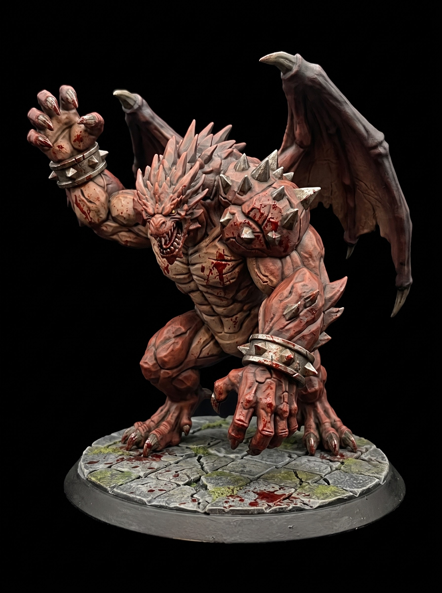

Dark Fantasy Dread Executioner Miniature STL
August 07, 2026

The rusted war-cleaver shatters the stone floor where Varek stood. Dust chokes the vault. Out of the smoke steps a new nightmare. A Dread Executioner moves past the stumbling giant.
Layered plate armor covers its towering frame. Spiked pauldrons tilt outward over tattered black chainmail. An iron executioner mask hides its face. Green soul-fire pulses inside a cage chained to its waist.
The executioner drives a two-handed greatsword through the giant's iron knee. Rusted armor splits. The pit lord roars and crashes to the stone.
The executioner does not pause. It pulls its crimson blade free and locks its iron visor onto Varek. The soul-cage at its belt snaps open.
Get free miniatures:
- Fantasy: https://cults3d.com/@BattleFoundry
- Scifi: https://cults3d.com/@BATTLEFOUNDRYSCIFI
- Grimdark: https://cults3d.com/@DREADWORKS
- Resin Statue: https://cults3d.com/@BlacksiteSyndicate